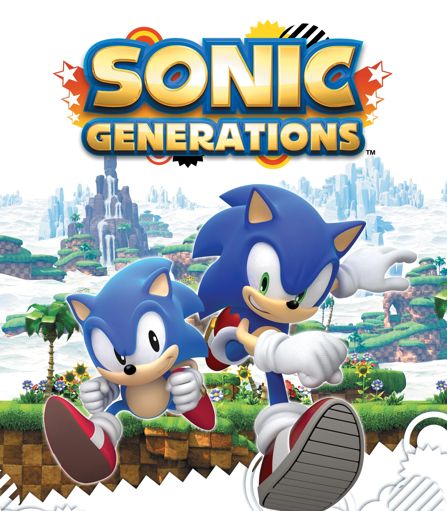
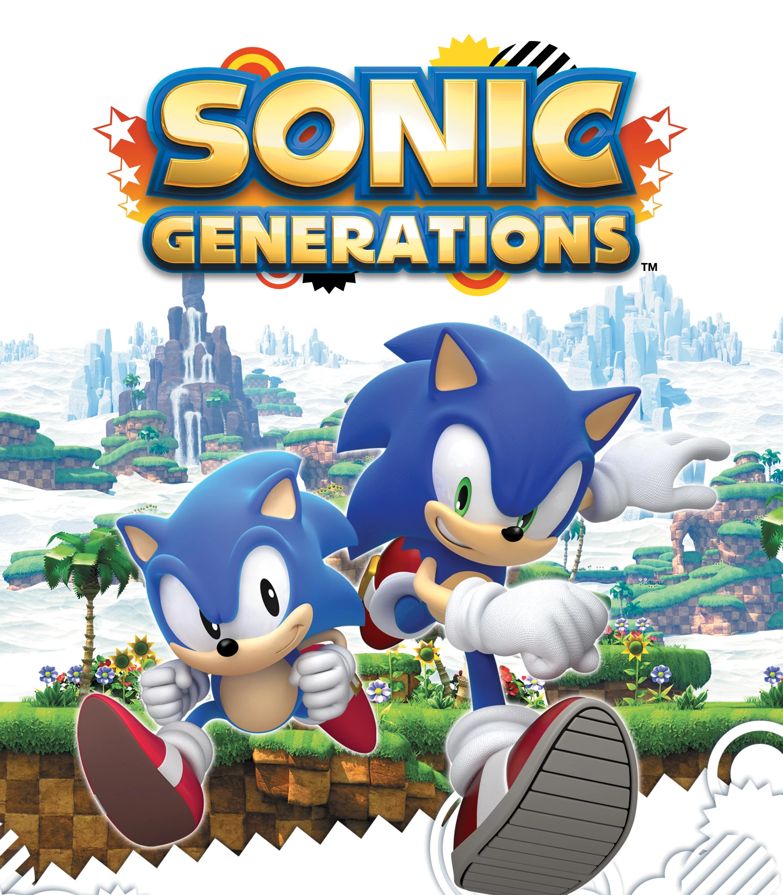

Olá, este é o meu site de fã para fãs do ouriço azul Sonic!
Aqui
você encontra o meu blog e pode conversar com outros fãs no fórum.
Criado por Yuji Naka como a resposta a Nintendo para ser o grande rival do Mario, em 1991 é lançado Sonic the Headgehog para o video game MegaDrive (Sega Genesis na América do Norte). Sonic virou uma franquia multimidia de grande sucesso, cativando pessoas do mundo todo.
Os jogos são separados pelos fãs por eras.

É marcado pela trilogia original clássica do Mega Drive e os jogos de Saturn (o substimado Sonic R) e a duologia Adventure do Dreamcast. Os meus jogos favoritos da franquia foram lançados nessa era.

A atual era dos jogos do Sonic onde é marcado pelo mecânica de boost (onde você segura um botão e o Sonic acelera em níveis absurdos) Apesar dessa mecânica ter simplificado o gameplay dos jogos essa era teve grandes lançamentos.


Correr e chegar ao final da fase, jogos de plataforma clássica que envolvem momentum e física. Meus
favoritos
dessa
era incluem toda a trilogia do Mega Drive, inclusive o primero jogo Sonic The
Hedgehog que é considerado o mais fraco deles, o que eu não acho já que o gameplay dele é bem
sólido, mas as pessoas costumam não gostar dele por não ter
o spin dash, fazendo você depender muito da mecânica de pegar velocidade para vencer uma rampa e também
por ter muitas fases de água. No segundo jogo Sonic The Hedgehog 2,
tudo é melhorado do primeiro, as fases, os chefes são mais elaborados e o Super Sonic é uma adição
incrível que acrescenta mais tempo de jogo. O que eu considero o melhor de todos é o Sonic The Hedgehog 3 aperfeiçoaram as mecânicas, adicionaram uma nova
transformação especial as formas Hyper, novas esmeraldas, personagens novos com caminhos diferentes e
até a história tem mais profundidade e aparecendo mais vezes. Na minha opnião é o jogo definitivo do
Sonic.
Os jogos do GameBoy Advance continuam o legado dos jogos 2D de Mega, adicionando novos personagens, com
o gameplay de plataforma melhorado. Sonic Advance mantém o estilo dos
jogos antigos. Jogar com os personagens diferentes e testar suas mecânicas é bem legal, principalmente
com a Amy que tem uma jogabilidade completamente diferente dos outros personagens e eu defendo que é um
dos melhores personagens do jogo. Sonic Advance 3 continua com o
gameplay de plataforma clássico da franquia, abandonando o estilo voltado mais para velocidade do Sonic
Advance 2. Sua grande novidade é mecânica de juntar personagens e criar combinações únicas de gameplay
diferenciando cada estilo de jogo.
No Nintendo DS, que é o meu console portátil da infancial, foi lançado Sonic
Rush e a sua continuação meio esquecida Sonic Rush
Adventure introduzindo a Blaze para a série e o mundo dela, e também o novo elemento de
gameplay que se tornaria padrão na série o boost. Com sua triha sonora original, e gameplay que te
prende ao jogo, este se tornou um dos meu jogos favoritos e um dos melhores jogos da fraquia.

 

Sonic Adventure de Dreamcast teve a difícil tarefa de adaptar os jogos
de Mega para o 3D, e ele conseguiu fazer isso de uma maneira incrível, colocando vários personagens com
gameplay diferente e dando a maior profundidade na história até então enchendo o jogo de cutscenes.
Joguei esse jogo por horas e cheguei a platinar fazendo tudo possível, aproveitando tudo o que esse jogo
incrível tem a oferecer.
Sonic Unleashed é não só um dos meus
jogos favoritos do Sonic, mas um dos meus jogos favoritos de todos os tempos. Sua gameplay é profunda,
divertida, e nas fases de DLC se torna uma das coisas mais desafiantes possíveis. Sonic Generations um dos últimos jogos que eu me empoguei em jogar do
Sonic, ele conseguiu agradar tanto os fãs dos jogos 2D tanto os dos jogos 3D. Em ambos os estilos o jogo
se mantém divertido.
A série é cheia de spin-offs, mas alguns que eu joguei foram o Sonic R que muitos odeiam, mas eu acho ele bem divertido e charmoso, só leva tempo para se acostumar a "pilotar" os personagens. Sonic Riders o jogo mais estiloso da franquia, e com mecânicas de gameplay bem complexas e difíceis de se acostumar, o que pode afastar algumas pessoas desse título incrível.
Os fãs criaram e continuam a desenvolver jogos incríveis baseados na franquia do Sonic.